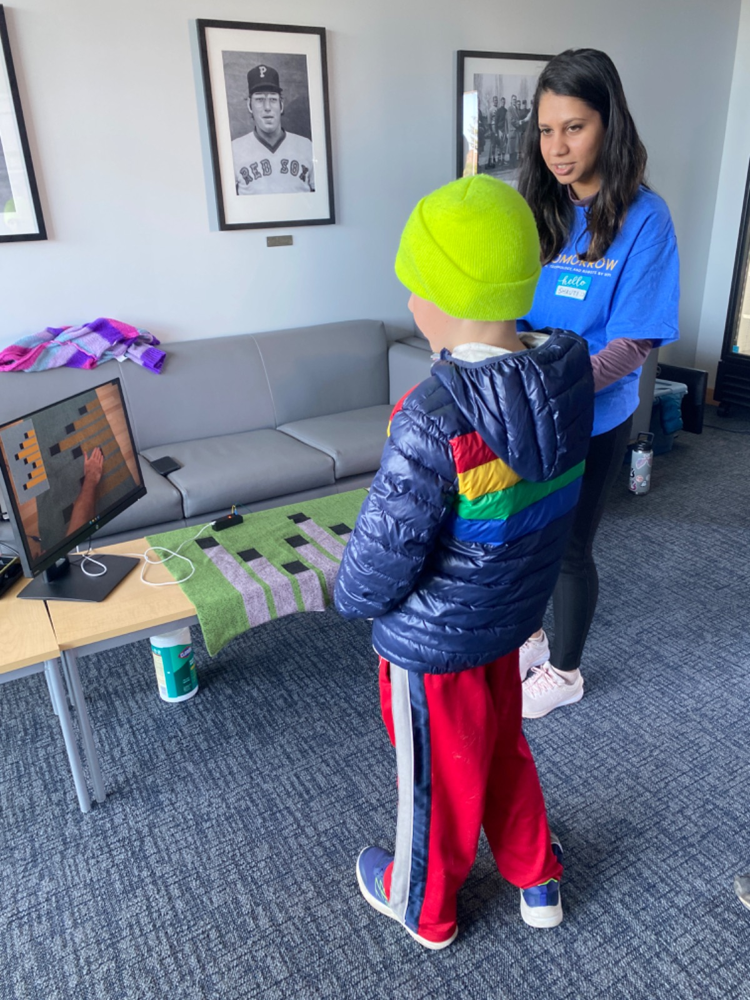
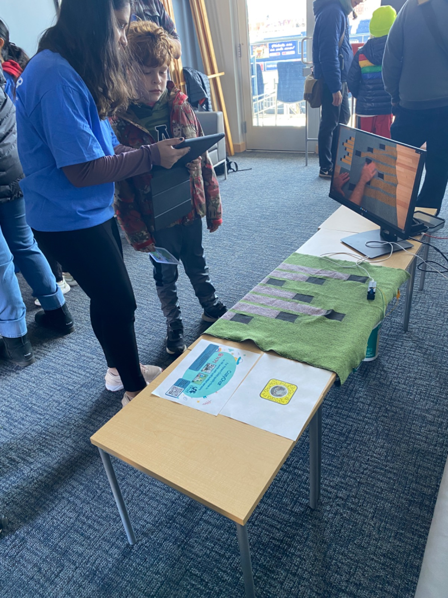
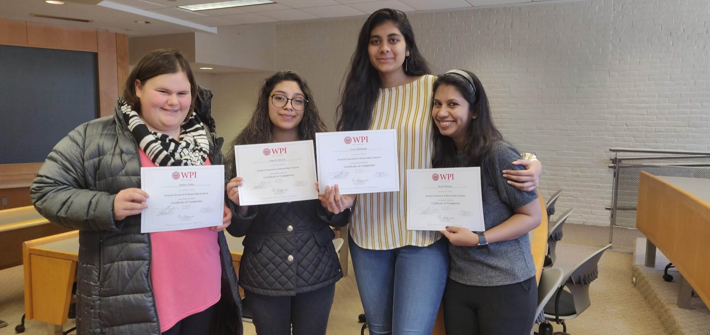

Teaching, Advising and Outreach
I enjoy teaching. I have been a teaching assistant for undergrad level courses at WPI.
I am passionate about outreach and supporting women and under represented groups to explore careers in STEM (especially computing) research.
2022
RESEARCH ADVISING:
Major Qualifying Project: Advising three students on their project titled "Sewn Into Memory:
Reliving feelings through an AR Quilt". [Video Link]
Jul-Aug 2022
TEACHING: Summer Outreach @WPI- STEM Exploration Program: Taught High School children coding with EarSketch: An online platform for remixing music with code.
April 2022
OUTREACH: Exhibitor at TouchTomorrow (WPI) : A STEM Exploration event for children and families!
 2022
RESEARCH ADVISING:
Major Qualifying Project: Grad Student advisor for three students on their project titled "Towards Inclusive Learning and Research with Sign Language Surveys". [Project Report Link]
2019
MENTORING: Women’s Research and Mentorship Program (WRAMP) [Program Link]
